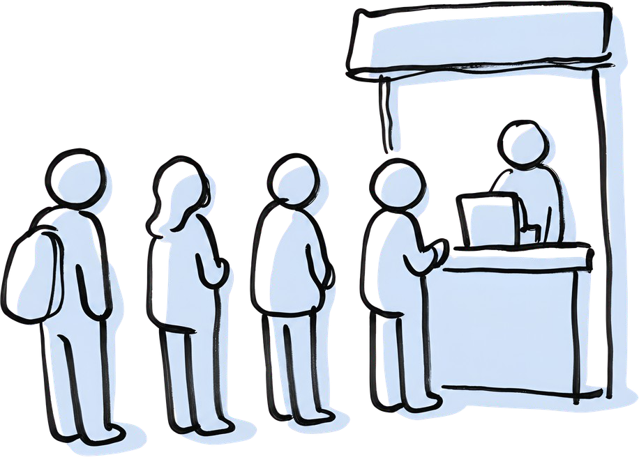
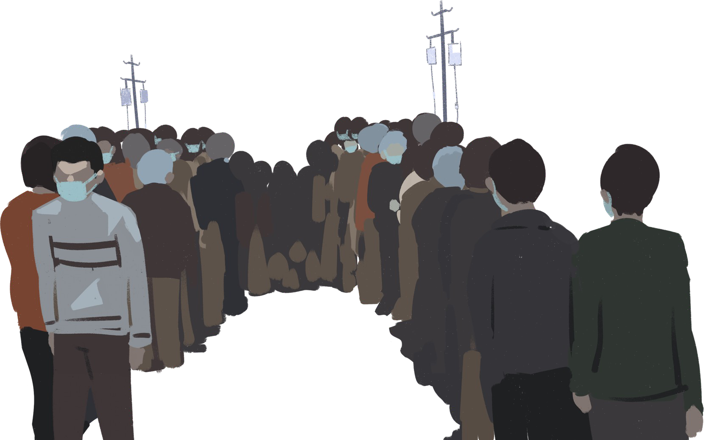
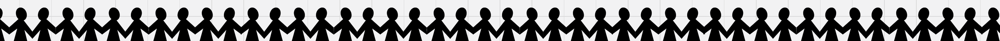

Join the queue from your phone: QR · NFC · in person
AAYUSHI UMBARE IRA BANDEKAR KHADIJA GODME PIYUSH PITRE



dashQ
Problem Statement
Online, everything is seamless: food, cabs and bills take a few taps. But the moment we walk into a clinic, bank, canteen or government office in India, we are back to standing in a crowd.
Nobody knows their place, how long it will take, or whether someone just cut in. Businesses run the line with shouting and paper registers, and get no information out of it.
You can't leave the line, even for two minutes
Line-cutting and "I was here first" arguments
You repeat your name and order to three different people
Paper tokens get lost, nobody can estimate the wait
The business looks disorganised and loses walk-aways
A typical Indian queue today
Arrive at the counter
Shout your name / take a paper slip
Need to step away?
Yes
Lose your place or miss your turn
No
Stand and wait, no idea how long
Crowd, cutting, disputes
Finally served
02
dashQ
Problem Identification
Where we see it every day
Hospitals & clinics: OPD tokens, test and pharmacy queues Cafés & canteens: lunch-hour rush at the counter Banks, RTO, ration shops: service counters and token lines College offices: fee payment and admission days Salons & repair shops: "who came first?"
Two sides of the same problem
Customers
Wasted time standing, no visibility, unfair order, no way to step away.
Businesses
Look unprofessional, staff busy managing crowds, zero data on peak hours or popular items.
36%
of India's population already lives in cities
600M
people expected in Indian cities by 2036 (World Bank)
03
dashQ
Existing Solutions & Their Gaps
Lots of things try to fix queues. None of them fit a small Indian shop or clinic.
Solution
Where you see it
Why it falls short
Paper token / register
Clinics, govt offices
Easy to lose, no live updates, no data, you still have to stand nearby
Token display machines
Banks, Aadhaar centres
₹20k–1L+ of hardware, one queue only, you must stay in the room
Buzzers / pagers
Malls, food courts
Expensive, get lost or broken, short range, shared and unhygienic
Enterprise queue software
Qmatic, Qless, Waitwhile
Priced in USD, often needs an app download, too complex for a small shop
Booking apps
Practo, table bookings
Only for scheduled visits, not walk-ins; the platform owns the customer
Calling names / WhatsApp
Small shops
Doesn't scale, no ordering, no analytics, chaotic
THE GAPNo cheap, no-app, walk-in-first system built for small and medium Indian businesses.
04
dashQ
Objectives
1
Go virtual, no app Join from any phone browser by QR, NFC tap or at the counter
2
Show the wait Live token, people ahead and a realistic wait estimate
3
Free people to step away The phone beeps, vibrates and flashes red when it's your turn
4
Order while you wait Pick from a menu or list of services, straight to the business
5
Make the business look professional A live board to call, move, reorder and complete customers
6
Learn from data Charts for busy hours, wait times and best-selling items
05
dashQ
Proposed Solution
dashQ turns a physical line into a virtual one. Customers join in one of three ways (triple servicing), so nobody is left out.
▦
QR code
Printed at the counter. Any phone camera opens /b/encave-cafe?via=qr. Works on every smartphone.
📶
NFC sticker
A ₹10 NTAG sticker stores our link. Tap the phone and you're in, no camera needed. The "wow" moment.
🧍
In person (IP)
For elderly people or anyone without a smartphone: staff add them to the line from the dashboard.
What happens next
The customer fills up to 3 short phone pages (details → menu → links/payment), gets a token, and can sit, wander or step out. The business watches everyone on a live laptop board. When staff press Call, the customer's phone beeps and flashes red.
Why three ways?
Many budget phones have no NFC, some people have no smartphone at all. QR covers almost everyone, NFC is the fast path, IP is the safety net.
06
dashQ
Customer Side: 3 Mobile Pages
Split into pages only to keep it phone-friendly. The business can switch each page on or off and choose when the token is given.
Encave Cafe · Step 1
Your details
Name
Phone (optional)
Email (off)
Next
1 · Details
Step 2
Pick from the menu
Cheese maggi− 1 +
Cold coffee− 2 +
Veg sandwich− 0 +
Masala chai− 0 +
Next
2 · List / menu
Step 3
Good to know
💳 Pay by UPI →
today's specials (picture)
Free Wi-Fi: encave-guest
Get my token
3 · Links / pics / text
YOUR TOKEN
007
It's your turn!
Collect at the counter
🔔 📳
Ticket → your turn
Cookies save progress. Close the tab by mistake, scan again, and you land back on the same step.
Live ticket shows people ahead and wait estimate, refreshing every 3 s.
Your turn: beep + vibrate + red flash.
Moving a card on the board changes the message: "We're making your food."
07
dashQ
Business Side: The Live Board
Built for a laptop on the counter. Every line is a column; every customer is a card that updates by itself.
Encave Cafe · Live queue
📊 Analytics⚙ Settings
Ordered · 3
Call next
001TanviQR
joined 12 min ago · Cold coffee ×2
002OmkarNFC
joined 9 min ago · Cheese maggi
007SaraIP
joined 2 min ago
+ Add in person
Preparing · 1
Call next
004Rahul ↕ dragging…
Ready to collect · 2
Call next
006EshaCALLED
✓ Done · Move ▾ · Remove
005YashNFC
Call next
One click calls the first waiting person and their phone goes red.
Drag & drop
Reorder cards, or move someone to another line (Ordered → Preparing → Ready).
Done / remove
Complete people or take them off the line.
Add in person
Walk-ins without phones get an IP token.
08
dashQ
Settings: The Business Is in Control
One product, many industries. A clinic, a café and a salon set dashQ up completely differently, with no code.
Section 1
Customer pages & lists
Turn each of the 3 pages on/off
Name, phone, email: off, optional or required
Edit the menu / services list with prices
Add links (UPI, Instagram), pictures and text
Choose when the token is given: right away, after page 1, page 2, or at the end
Section 2
Dashboard lines
Add as many lines as you need
e.g. Ordering → Waiting for food → Delivery agents
Each line has its own message for the customer ("Your food is ready!")
Average minutes per customer, used for the wait estimate
Section 3
Business settings
Business name and type
Download the QR code (made in Python with qrcode)
Link to write on the NFC sticker
Delete account (all data removed by ON DELETE CASCADE)
Café (Encave): name only → menu → UPI link · lines Ordered / Preparing / Ready
Clinic (Sociovate): name + phone → choose doctor · lines Waiting room / With doctor
09
dashQ
What's Cool & What's Not (Yet)
Highlights
NFC tap-to-join:a ₹10 sticker replaces a token machine
Your phone is the buzzer:beep, vibrate, red flash
No app to install:just a web page, ideal for India
Queue + menu + paymentin one flow
Python-made beep:a sine wave written as a WAV file
Small-shop analyticsusually only big chains get
Honest shortfalls → how we handle them
Limitation
Mitigation
Many budget phones have no NFC; older iPhones can't read it in the background
QR and in-person exist for exactly this. NFC is a bonus.
No smartphone or data
Staff add them as IP
Sound blocked on silent / locked phones
"Tap to turn on alerts" button, vibration, red screen; SMS later
Cookies cleared / incognito
Token shown on screen to note down
Internet drops
Fall back to calling tokens aloud
Fake / spam joins
Staff can remove; rate limits
10
dashQ
Use Cases
Anywhere people wait in person, dashQ fits. Lines and pages adapt to each business.
🏥 Healthcare
Clinic OPD tokens · pick a doctor · labs: Waiting → Sample taken → Report ready · pharmacy pickup
🍜 Food
Cafés, college canteens, food trucks · order from the menu in line · restaurant waitlists · a "Delivery agents" line
💇 Services
Salons (pick stylist) · phone and bike repair: Dropped off → Repairing → Ready · laundry and tailors
🏛 Government & banks
RTO, post office, ration shops (PDS) · bank counters: deposit / KYC / loan lines
For every business: more professional · real queue management · fewer walk-aways · data for staffing and stock · space to show offers and payment links
11
Part 2
How we built it
"Python does all the logic. Ready-made libraries handle the hard browser parts, so we didn't hand-write complex JavaScript."
8 tables in SQLite. Everything belongs to a business.
BUSINESSES
id · name · slug email · password_hash
LINES
name · position customer_label
TICKETS
token · code · source status · position joined_at · called_at
LIST_ITEMS
name · category · price
TICKET_ITEMS
ticket_id · name · qty
EXTRAS
kind · title · body
SETTINGS · PAGE_VIEWS
A ticket = one customer
status: waiting → called → done (or left) source: qr, nfc or ip
Privacy between businesses
Every table has business_id and every query filters by it. A test proves business A can't see business B.
Clean deletes
ON DELETE CASCADE: deleting a business removes all its rows.
Tokens reset daily
001, 002, 003… start again each morning.
17
dashQ
Workflow: A Customer Joins
1. Scan or tap
Phone opens /b/encave-cafe?via=qr (or nfc). A page view is counted.
2. Cookie check
Flask's signed session cookie remembers progress. Been here before? Go straight back to that page.
3. Pages the business turned on
Details → menu → extras. Any page can be skipped.
4. Token at the chosen moment
issue_ticket_if_due() calls create_ticket() right away, after page 1, page 2, or at the end.
5. Live ticket
People ahead × average minutes = wait estimate. Refreshes every 3 s.
Scan QR / tap NFC
Cookie: already here?
Yes
Resume where they left
No
Page 1: name / phone / email
Page 2: pick items + quantity
Page 3: UPI link, pictures, text
Token can be given at any step
Ticket: token 007 · 3 ahead · ~12 min
Phone checks every 3 s
18
dashQ
Workflow: "Call" → Phone Flashes Red
Staff click "Call next"
POST /app/line/3/next (htmx)
queue.call_next() status = 'called', save called_at
Board shows the card red + "Calling 007"
Phone polls: status == called?
No
Show place + wait
Yes
🔔 beep · 📳 vibrate · 🟥 red flash
Live without WebSockets
htmx asks /app/live every 3 s; Flask runs a SELECT and returns fresh HTML; idiomorph swaps only what changed; auto-animate slides cards in. For a café or clinic, 3 s is fast enough and much simpler.
The beep is made in Python
Not a downloaded file: services/sound.py writes three 880 Hz sine-wave beeps with the wave module.
for beep in range(3):
for i in range(int(RATE * 0.18)):
v = math.sin(2*math.pi*880*i/RATE)
samples.append(int(v * 32767))
file.writeframes(struct.pack(...)) # /alert.wav
Phones only allow sound after a tap, so the ticket has a "Tap to turn on alerts" button.
19
dashQ
Analytics: pandas → seaborn → SVG
SQLitetickets, ticket_items
→
pandas DataFramepd.read_sql_query
→
New columnswait_min · hour · weekday
→
charts.pyone function per chart
→
SVG in the pagecached 60 s
Chart
Type
Library call
Answers
Joins per day
Line + fill
sns.lineplot
Is business growing?
How people join
Donut
ax.pie
QR vs NFC vs IP
Busiest times
Heatmap
sns.heatmap
Which day + hour
Wait by hour
Bar
sns.barplot
Slowest hour
Most selected
H-bar
sns.barplot
Top items
Line vs wait
Scatter + trend
sns.regplot
Longer line, longer wait?
Wait spread
Histogram + KDE
sns.histplot
Typical wait (median)
Done vs left
Stacked bar
multiple="stack"
When people give up
Why SVG?
Sharp at any size, uses our Inter font, and needs no chart JavaScript.
Wait time in pandas
called_at − joined_at in minutes, per ticket.
Safe in a web server
We use Figure(), not plt.figure(), because pyplot keeps global state.
20
dashQ
Analytics: Real Output (1/2)
Demo café "Encave": 30 days, 1,701 customers, average wait 4.6 min, busiest at 1 pm. Generated by our charts.py.
Busiest times (heatmap)
{{busy_heatmap}}
How people join (donut)
{{join_sources}}
People joining per day
{{joins_per_day}}
Most selected from the menu
{{top_items}}
21
dashQ
Analytics: Real Output (2/2)
These turn a busy counter into decisions: when to add staff, what to stock, and when people give up.
Wait time by hour
{{wait_by_hour}}
Longer line → longer wait? (scatter + trend)
{{queue_vs_wait}}
How long people wait (histogram + KDE)
{{wait_distribution}}
Completed vs left, by weekday
{{outcome_by_weekday}}
22
dashQ
Security & Testing
Security
🔐 Hashed passwords, never plain text (Werkzeug)
🛡 CSRF tokens on every form and htmx request
⛔ 5 wrong passwords → account locked 10 minutes
🧱 business_id on every query: no data leaks between shops
🖼 Uploads: JPEG/PNG/WebP under 4 MB, re-saved by Pillow (strips GPS), random name
🔗 Links must be https / http / upi: blocks javascript: tricks
Testing
17
pytest tests, each with a fresh temporary database
Sign up · lockout · every page/token combination · cookie resume · call / done / move / reorder · deleting lines · isolation between businesses · analytics with sample data
$ python -m pytest -q
................. 17 passed
Demo data:flask seed-demo creates Encave (café) and Sociovate (dental clinic) with 30 days of realistic history.
23
dashQ
SDG Mapping
How dashQ supports the UN Sustainable Development Goals
SDG
3
Good Health and Well-being
Calmer clinic waiting rooms: less crowding, less infection risk, and sick people can sit instead of stand.
SDG
9
Industry, Innovation & Infrastructure
Low-cost digital tools for small businesses: a QR print-out and a ₹10 sticker, built on free software.
SDG
10
Reduced Inequalities
No app needed, and staff can add people without smartphones. First come, first served, fairly.
SDG
11
Sustainable Cities & Communities
Spreads people out of crowded counters as Indian cities grow towards 600 million people.
24
Python Mini-Project
dashQ
What's next
TV "Now serving" display for the counter
Real SMS / WhatsApp alerts
Several branches per business
Wait-time prediction from history
Postgres for larger scale
Research & References
[1] M. Ghazal, R. Hamouda, S. Ali, "An IoT Smart Queue Management System with Real-Time Queue Tracking," 5th Intl. Conf. on e-Learning (econf), 2015.
[2] "Mobile-Augmented Smart Queue Management System for Hospitals," IEEE 33rd Intl. Symp. on Computer-Based Medical Systems (CBMS), 2020.
[3] A. Chydziński, "Waiting Time in a General Active Queue Management Scheme," IEEE Access, vol. 11, 2023.
[4] "Waiting Time Prediction in Queue Management: Leveraging Machine Learning Approach," ICRPSET, 2024.
Thank you! Questions?
dashQ makes in-person experiences as smooth as online ones.